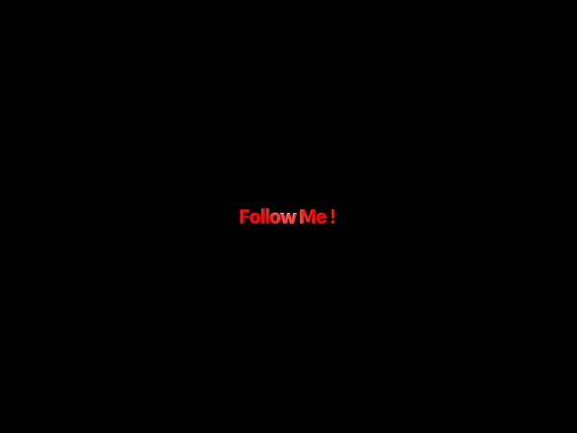
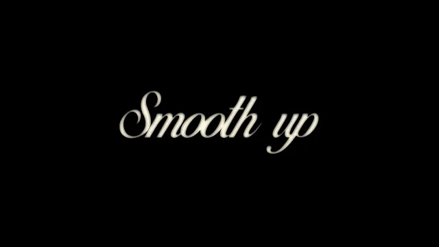

KONUŞMA VİDEOSU KURGULUYORSAN
KONUŞMAYI
KONUŞMAYI
İZLENEBİLİR
KURGUYA ÇEVİR.
Altyazıdan son whoosh’a kadar.
Premiere’in içinde.

SUFLO PRO2.8.2ŞİMDİ YAYINDA
suflo.app/proBUNU NASIL YAPTIĞINI GÖR →
BİR REELS İÇİN
VİDEOYU DEĞİL,
VİDEOYU DEĞİL,
AYNI 8 İŞİ
TEKRAR EDİYORSUN.
TRANSKRİPT
SATIR DÜZELT
STİL
SESSİZLİK KES
ZOOM
SFX ARA
MOGRT BUL
PRESET UYGULA
Sorun edit yeteneğin değil.DAĞINIK İŞ AKIŞI.
02/10SUFLO TAM BURADA BAŞLIYOR →
PREMIERE’DEN ÇIKMADAN
İŞTE
İŞTE
SUFLO.
Konuşma videosunun tekrar eden işlerini aynı proje bağlamında tutan creator paneli.

AI ALTYAZIMAGIC CUTAUTO ZOOMBEATMOGRTSFXMOTIONEMOJI
03/10ÖNCE KONUŞMAYI YAKALAR →
KONUŞMA KONUŞMA KONUŞMA
SESTEN, DÜZENLENEBİLİR KURGUYA
KONUŞTUĞUNU
KONUŞTUĞUNU
YAKALAR.
Buradaki en önemli nokta şu.
Kurgu, fikrin hızını kesmemeli.
Suflo tam olarak bunu çözüyor.
04/10SONRA RİTMİ TEMİZLER →
İKİ SIKICI İŞ · İKİ AKILLI ARAÇ
ÖLÜ ANI KES.
ÖLÜ ANI KES.
VURGUYU YAKLAŞTIR.
HAM KONUŞMA→İZLENEBİLİR RİTİM
Önizlersin. Onayladığını kopya sekansa güvenle uygular.
BOŞLUK → KESİMYumuşak, Jump Cut veya Snap‑In. Yoğunluk ve merkez sende.
100% → 112%05/10ŞİMDİ ALTYAZIYA KARAKTER VER →
ALTYAZI SADECE OKUNMAZ
İÇERİĞİN GİBİ
İÇERİĞİN GİBİ
DAVRANIR.
PARA YOK
YEŞİL KONTURyüksek enerji · MrBeastŞAK!
STICKERpop · eğlencezarif hikâye
ZARİFbelgesel · lifestyleYENİ SÜRÜM
MOR VURGUpremium · teknoloji10tanınır stilSarı Vurgu · Kutu · Neon · Temiz · Beyaz Kalın · Daktilo ve daha fazlası
06/10SONRA ARAMAYI BIRAK →
DOSYA KOVALAMAK EDİT DEĞİL
ARA. ÖN DİNLE.
ARA. ÖN DİNLE.
PLAYHEAD’E EKLE.




 WHOOSH · IMPACT · CLICK · POP · GLITCH
WHOOSH · IMPACT · CLICK · POP · GLITCH07/10HAREKET DE AYNI YERDE →
KEYFRAME EZBERLEMEK YERİNE
HAREKETİ
HAREKETİ
SEÇ.
Klibi seç. Hızı ve gücü ayarla. Uygula.
12TEK‑TIK
MOTION
+MOTION
278SUFLO SMOOTH
EFEKTİ
= 290 HAREKETEFEKTİ
08/10BİR KEZ KUR. SONRA? →
TEKRAR PAKET İNDİRMEK YOK
BİR KEZ KUR.
BİR KEZ KUR.
HER SÜRÜMDE BÜYÜSÜN.
SUFLO PRO GÜNCEL2026.08.23.1 içerik sürümü✓
Suflo’nun ücretsiz altyazı çekirdeği sonsuza dek devam eder. Pro, iş akışına hız ve içerik ekler.
09/10ŞİMDİ KARAR SENİN →
BİR SONRAKİ EDİTİNİ
ESKİ YÖNTEMLE
ESKİ YÖNTEMLE
YAPMA.
Konuşmayı altyazıya, ritme, stile ve harekete dönüştüren Premiere panelini aç.
TEK SEFER749TLABONELİK YOK
✓ 3 bilgisayar✓ 14 gün iade✓ Pro içerik bulutu✓ Windows + macOS
SUFLO PRO’YU İNCELEsuflo.app/pro→
@suflo.appPREMIERE’DE DAHA AZ TIK.